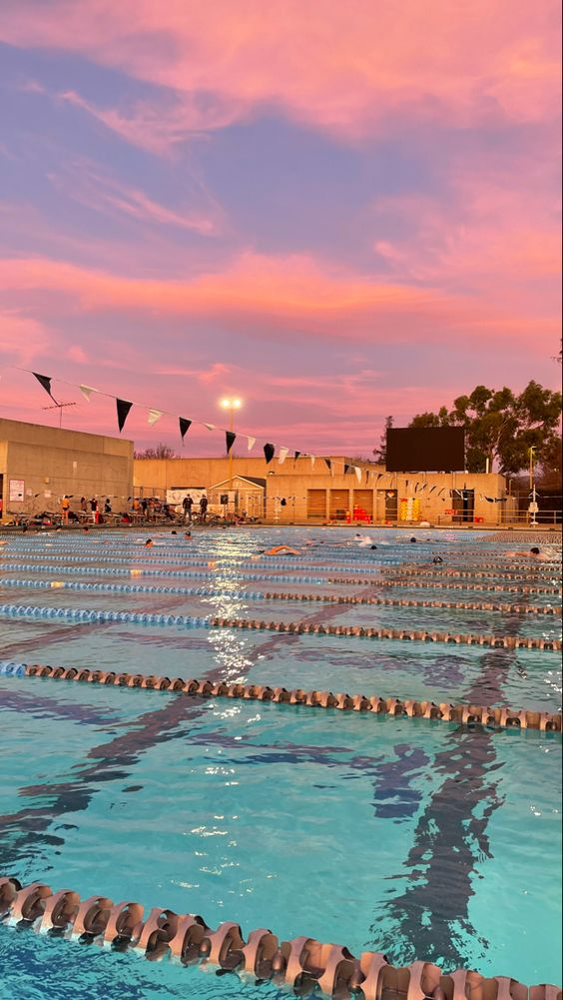

HOME
MI DEPORTE
- Mi deporte favorito es La natación ya que fortalece el corazón y los pulmones mientras trabajan todos
los músculos principales del cuerpo. Se puede nadar para hacer ejercicio sin importar la edad. Algunas
personas enseñan a sus bebés y niños pequeños a nadar para que puedan aprender a amar y respetar el agua
a una edad muy temprana es muy bonito sentir el agua y más si vas al mar ya que ayi se siente algo
maravilloso ver lo profundo del mar también los animales q puedes encontrar ayi como una estrella de mar
,las medusas entre otras cosas ..
